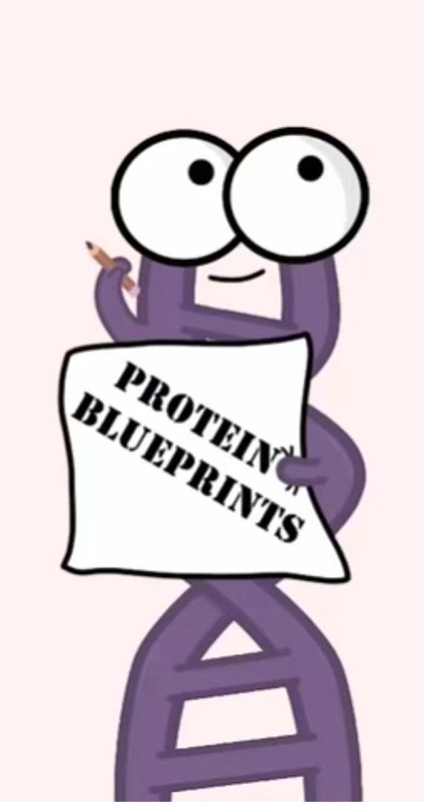
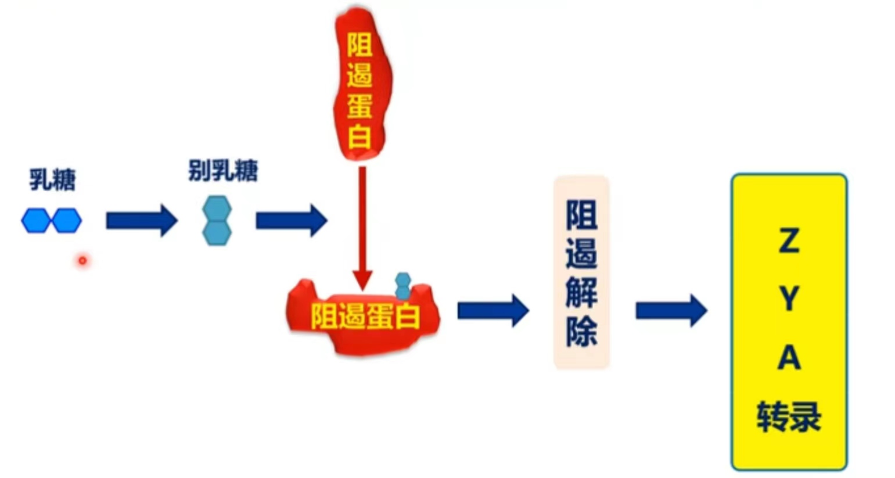
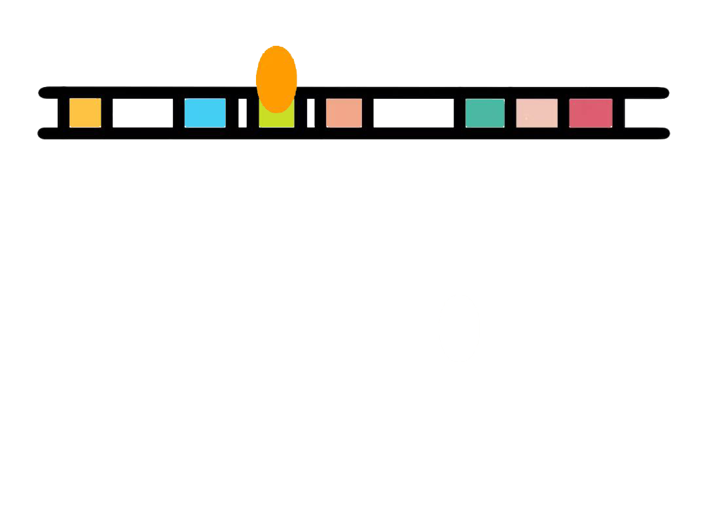
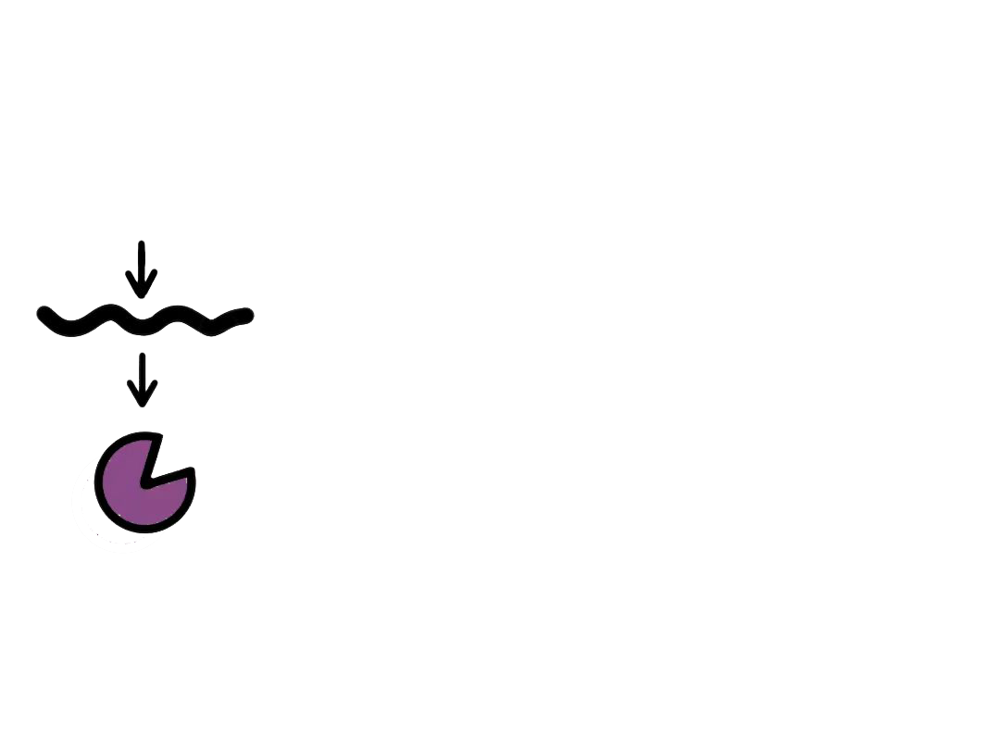
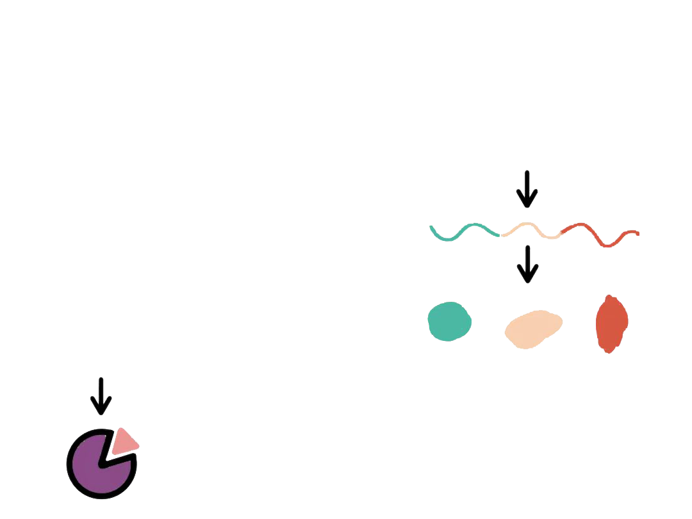
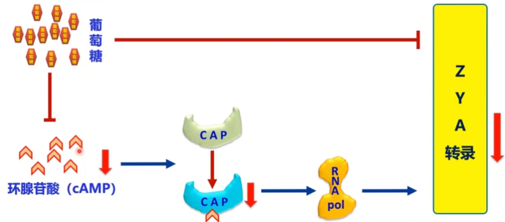

The expression of lactose metabolizing enzyme genes is characterized by the fact that these genes are turned off in the absence of lactose in the environment, and are induced to turn on only when lactose is present in the environment to synthesize the enzymes required to metabolize lactose. The lactose manipulator was the first mode of transcriptional regulation discovered in prokaryotes.
Most prokaryotes have multiple functionally related genes in tandem, and rely on the same regulatory sequences to regulate their transcription and enable coordinated expression of these related genes.


Negative regulation by deterrent proteins
-

-

-
-


Positive regulation of CAP